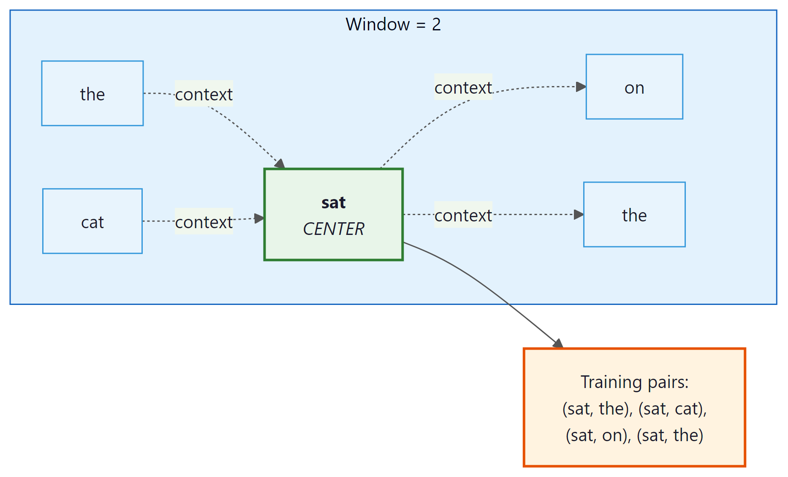
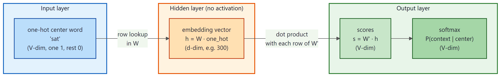
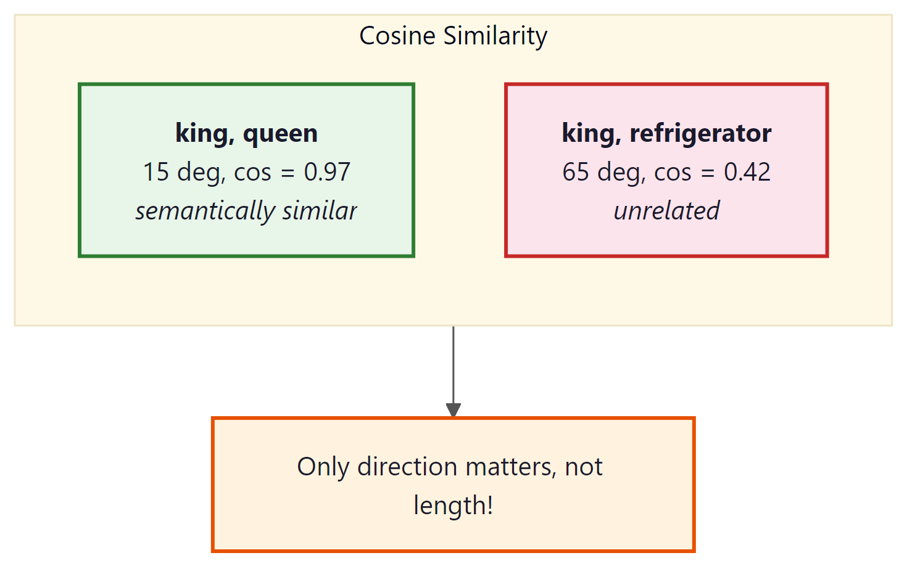
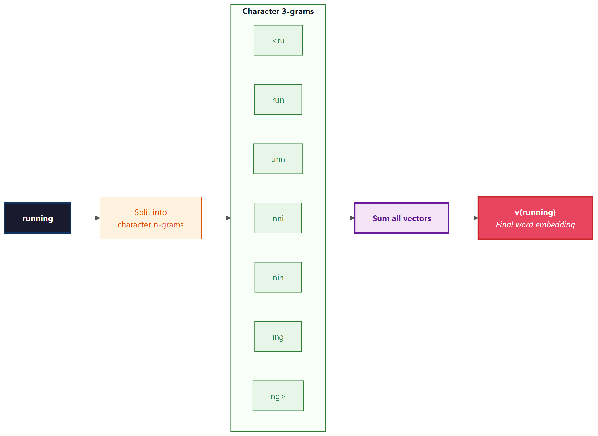

King minus man plus woman equals queen. I tried this with my coworkers and HR got involved.
Lexica, Analogically Reckless AI Agent
Prerequisites
This section builds on the text preprocessing pipeline from Section 1.2 and the concept of feature representations from Section 0.1. You should understand why sparse, high-dimensional representations (like one-hot vectors) are problematic. Familiarity with basic linear algebra (dot products, vector similarity) will help with the embedding arithmetic examples. The embedding concepts here lay the groundwork for the semantic search techniques covered later in Section 18.1.
You will see both "encoding" and "embedding" used frequently in NLP. They mean different things. An encoding (like one-hot encoding) is a fixed, rule-based mapping from symbols to numbers; no learning is involved. An embedding is a learned dense representation where the values are trained to capture meaningful relationships. One-hot encoding treats every word as equally different from every other word. Embeddings learn that "cat" and "kitten" should be close together. This section is about the shift from encodings to embeddings.
- The distributional hypothesis works: words in similar contexts get similar vectors, and this captures real semantic relationships.
- Embeddings encode relationships as geometry: king:queen = man:woman is a vector arithmetic operation, not magic.
- 300 dimensions is the empirical sweet spot: enough capacity for rich semantics, not so much that it overfits.
- Word2Vec, GloVe, and FastText are complementary: same idea (dense vectors from context), different algorithms, similar results.
- The fatal flaw is shared: one vector per word, regardless of context. This is what contextual embeddings solves.
The Distributional Hypothesis
In 2013, Tomas Mikolov and colleagues at Google published a paper that would reshape all of NLP. The idea was elegantly simple: instead of defining word representations by hand, learn them from data. The result was Word2Vec: dense vectors where semantically similar words are geometrically close.
"You shall know a word by the company it keeps."
J.R. Firth, 1957 (the distributional hypothesis)
This idea (the distributional hypothesis) says that words appearing in similar contexts tend to have similar meanings. Why does this work? Consider: the words "cat" and "dog" both appear near "pet," "veterinarian," "cute," "fed," and "walked." A word you have never seen, like "wug," that also appears near "pet" and "fed" is probably an animal too. Context is a remarkably reliable proxy for meaning. This principle is the foundation of all modern word representations, including the embeddings inside GPT-4 and Claude.
Word2Vec was the "ImageNet moment" for NLP. Before Word2Vec, NLP was mostly a separate field from deep learning. After Word2Vec, the entire field pivoted to neural approaches. It proved that neural networks could capture meaning, and that this meaning was useful for virtually every NLP task. The cross-entropy are exactly how these embedding vectors are trained.
Think of word embeddings as GPS coordinates in meaning-space. Just as GPS gives every location on Earth a pair of numbers (latitude, longitude), word embeddings give every word a set of numbers (typically 100 to 300 of them) that locate it in "meaning-space." Cities that are geographically close have similar GPS coordinates; words that are semantically similar have similar embedding coordinates. "Cat" and "dog" are neighbors in this space, just as Paris and London are neighbors on a map.
Why 300 dimensions? With only 2 or 3 dimensions, there is not enough room to capture all the nuances of meaning. "Cat" needs to be near "dog" (both animals), near "pet" (domestication), and near "meow" (sound), but far from "economy" and "python." Representing all these relationships simultaneously requires many dimensions. Research has shown that 100 to 300 dimensions is the sweet spot: below 100, there are not enough degrees of freedom; above 300, you get diminishing returns while increasing memory and compute cost.
Word2Vec: How It Works
Word2Vec comes in two flavors. We will focus on Skip-gram, which is simpler to understand and more widely used.
The idea: given a center word, predict the surrounding context words. Let us trace through a concrete example.
Take the sentence: "the cat sat on the mat" with a window size of 2. The model slides a window across the sentence, and at each position, creates training pairs:

| Center Word | Context Words (window=2) | Training Pairs Generated |
|---|---|---|
| the | cat, sat | (the→cat), (the→sat) |
| cat | the, sat, on | (cat→the), (cat→sat), (cat→on) |
| sat | the, cat, on, the | (sat→the), (sat→cat), (sat→on), (sat→the) |
| on | cat, sat, the, mat | (on→cat), (on→sat), (on→the), (on→mat) |
| ... | ... | ... |
After processing billions of such pairs, words that frequently appear in similar contexts (like "cat" and "dog," which both appear near "the," "sat," "chased") end up with similar vectors. Words that never share context (like "cat" and "economics") end up far apart.
Here is the surprising part: Word2Vec does not actually care about predicting context words accurately. The prediction task is just a pretext. What we really want are the weight matrices learned during training, because those weights are the word embeddings. The model is trained to predict context, but the useful output is the hidden layer, not the predictions. This "learn one thing to get another" pattern recurs throughout deep learning, including in the pretraining of GPT and BERT.
The Architecture (It Is Surprisingly Simple)
Skip-gram is a shallow neural network with just one hidden layer:
- Input: One-hot vector for the center word (dimension = vocabulary size V)
- Hidden layer: Multiply by weight matrix $W$ (V × d): this produces a d-dimensional vector. This IS the word embedding.
- Output: Multiply by another matrix $W'$ (d × V), apply softmax: this gives a probability distribution over all words in the vocabulary

Formally, the network computes the probability of each context word by applying a softmax over the output of the two weight matrices:
Skip-gram: Given center word, predict context words. Works better for rare words.
CBOW (Continuous Bag of Words): Given context words, predict center word. Faster to train.
In practice, Skip-gram with negative sampling is the most common choice.

Every modern LLM starts with an embedding layer that works exactly like Word2Vec. When GPT-4 or Claude processes text, the very first thing it does is convert each token into a dense vector using a learned embedding matrix. The difference is scale: Word2Vec learns 300-dimensional embeddings from a few billion words; GPT-3 uses 12,288-dimensional vectors from trillions of tokens, refined through dozens of transformer layers. But the fundamental idea (learned dense vector per token) is identical.
Negative Sampling: Making Training Tractable
The naive softmax over a vocabulary of 100,000+ words is extremely expensive. Negative sampling simplifies this: instead of updating all 100K output weights, we only update the weights for the correct context word (positive) and a small random sample of "negative" words (typically 5 to 20).
In plain English: make the dot product between the center word and the real context word large (positive), and make the dot product with random words small (negative). The key insight is that this approximation works because the vast majority of vocabulary words are irrelevant to any given context. Sampling just a handful of negatives is representative of the full vocabulary, much like polling a few thousand people can predict a national election.
Think of it like a multiple-choice test: instead of ranking every word in the dictionary, the model only needs to pick the right answer from a handful of options. If it can reliably distinguish the correct context word from five random distractors, it has learned something meaningful about word relationships.
Without negative sampling, each training step computes a softmax over 100,000+ vocabulary entries: 100,000 dot products plus a normalization pass. With negative sampling (k=5), each step requires only 6 dot products (1 positive + 5 negatives). That is a roughly 16,000x reduction per training step. On a corpus of billions of word pairs, this is the difference between months of training and hours.

Training Word2Vec from Scratch
Let us train a Word2Vec model using Gensim on a real corpus:
# Train Word2Vec with gensim: build a skip-gram model on a small corpus,
# then query the resulting vectors for nearest neighbors and analogies.
from gensim.models import Word2Vec
from gensim.utils import simple_preprocess
# Sample corpus (in practice, use millions of sentences)
corpus = [
"the king ruled the kingdom with wisdom",
"the queen ruled the kingdom with grace",
"the prince and princess lived in the castle",
"the man worked in the field every day",
"the woman worked in the market every day",
"a dog chased a cat across the garden",
"the cat sat on the mat near the dog",
"paris is the capital of france",
"berlin is the capital of germany",
"tokyo is the capital of japan",
]
# Tokenize
sentences = [simple_preprocess(s) for s in corpus]
# Train Word2Vec (Skip-gram with negative sampling)
model = Word2Vec(
sentences,
vector_size=50, # embedding dimensions
window=3, # context window size
min_count=1, # minimum word frequency
sg=1, # 1 = Skip-gram, 0 = CBOW
negative=5, # number of negative samples
epochs=100, # training epochs
)
# Explore the learned embeddings
print("Vector for 'king':", model.wv['king'][:5], "...")
print("Most similar to 'king':", model.wv.most_similar('king', topn=3))
print("Most similar to 'cat':", model.wv.most_similar('cat', topn=3))
# Peek inside: the embedding matrix is just a numpy array
print(f"\nEmbedding matrix shape: {model.wv.vectors.shape}")
# Output: (num_words, 50): each row is one word's vector# Measuring cosine similarity between word vectors
from numpy import dot
from numpy.linalg import norm
def cosine_sim(a, b):
return dot(a, b) / (norm(a) * norm(b))
# Using pre-trained Word2Vec vectors
print(cosine_sim(wv['cat'], wv['dog'])) # ~0.76 (both are pets)
print(cosine_sim(wv['cat'], wv['king'])) # ~0.13 (unrelated)
print(cosine_sim(wv['king'], wv['queen'])) # ~0.65 (both are royalty)
print(cosine_sim(wv['paris'], wv['france'])) # ~0.77 (capital-country)Measuring Similarity: Cosine Similarity
Before we explore analogies, we need to understand how similarity is measured between word vectors. The standard metric is cosine similarity: the cosine of the angle between two vectors.

For sentence-level (not just word-level) similarity, sentence-transformers computes embeddings and cosine similarity in three lines:
from sentence_transformers import SentenceTransformer, util
model = SentenceTransformer("all-MiniLM-L6-v2")
sims = util.cos_sim(
model.encode(["A cat sat on the mat", "Dogs are great pets"]),
model.encode(["Felines resting on rugs", "The stock market crashed"])
)
print(sims) # high similarity for semantically related pairs# Word analogy: king - man + woman = ?
# (Using pre-trained vectors for reliable results)
import gensim.downloader as api
# Download pre-trained Word2Vec (trained on Google News, 3M words)
# NOTE: This download is approximately 1.7 GB. It may take several minutes.
wv = api.load('word2vec-google-news-300')
# The famous analogy
result = wv.most_similar(positive=['king', 'woman'], negative=['man'], topn=1)
print(result) # [('queen', 0.7118)]
# More analogies
print(wv.most_similar(positive=['paris', 'germany'], negative=['france'], topn=1))
# [('berlin', 0.7327)] Paris is to France as Berlin is to Germany
print(wv.most_similar(positive=['walking', 'swam'], negative=['swimming'], topn=1))
# [('walked', 0.7458)] captures verb tense relationships too!pip install sentence-transformers
Euclidean distance measures the straight-line distance between two points. The problem: high-frequency words tend to have larger vector magnitudes, which inflates Euclidean distances even between semantically similar words. Cosine similarity normalizes this away by focusing purely on angle/direction. This is why virtually all embedding-based systems use cosine similarity, and why you will see it again in vector databases (Chapter 18) and RAG systems (Chapter 19).
Who: Search engineer at a mid-size e-commerce platform (50,000 products, 2M monthly searches)
Situation: The existing keyword-based search (Elasticsearch with BM25) returned zero results for 18% of queries because users searched with synonyms the product titles did not contain (e.g., "sneakers" vs. "running shoes," "couch" vs. "sofa").
Problem: Building a custom embedding model required labeled query-product pairs that did not exist yet. Collecting this data would take months.
Dilemma: The team considered three approaches: manually curating a synonym dictionary (labor-intensive, never complete), fine-tuning Section 6.1 on product descriptions (expensive, needed GPU infrastructure), or using pre-trained Word2Vec to expand queries with similar terms (quick, free, but potentially noisy).
Decision: They loaded Google News Word2Vec (300-dimensional, 3M words) and used it to expand each query term with the top-3 most similar words (cosine similarity above 0.65).
How: For "sneakers," Word2Vec returned ["trainers," "shoes," "footwear"]. These synonyms were added to the Elasticsearch query with a reduced boost factor (0.3x) so exact matches still ranked higher.
Result: Zero-result queries dropped from 18% to 4.2%. Click-through rate on the first page improved by 23%. Implementation took 2 days with no GPU costs.
Lesson: Pre-trained word embeddings are a powerful, zero-cost tool for semantic expansion in search and retrieval systems. They work best as a complement to exact matching, not a replacement.
Word embeddings do more than just place similar words nearby in vector space. The geometric structure they learn encodes surprisingly rich relationships between concepts. Perhaps the most striking demonstration of this is the ability to solve word analogies through simple vector arithmetic.
The Magic of Word Analogies
The "king minus man plus woman equals queen" analogy became so iconic that it practically served as the pickup line of the NLP community for five years straight. Researchers eventually discovered that the analogy trick works less reliably than conference talks implied, but by then it had already launched a thousand papers.
The most striking property of word embeddings is that they capture relationships as vector arithmetic:
# Loading pre-trained GloVe vectors
import gensim.downloader as api
# Download GloVe (trained on Wikipedia + Gigaword, 400K vocab, 100d)
glove = api.load('glove-wiki-gigaword-100')
# Same interface as Word2Vec
print("GloVe similarity cat/dog:", glove.similarity('cat', 'dog'))
print("GloVe analogy king-man+woman:",
glove.most_similar(positive=['king', 'woman'], negative=['man'], topn=1))The analogy "king − man + woman = queen" works because the training process creates a linear structure in the embedding space. The direction from "man" to "woman" encodes the concept of "gender," and this same direction applies to other word pairs. Similarly, there is a "capital-of" direction, a "past-tense" direction, and hundreds of other semantic and syntactic relationships, all encoded as linear directions in a high-dimensional space. This is why word embeddings are so powerful: complex semantic relationships become simple geometry.
- Try the analogy
wv.most_similar(positive=['doctor', 'woman'], negative=['man']). Does the result reflect real-world knowledge or social bias? Why? - Change the
vector_sizein the Gensim training example from 100 to 50 and then to 300. How does similarity quality change? Is bigger always better? - Compare
wv.similarity('good', 'great')vs.wv.similarity('good', 'bad'). Are antonyms far apart or close? What does this tell you about the distributional hypothesis?
Levy and Goldberg proved that Word2Vec's Skip-gram with negative sampling is implicitly factorizing a word-context PMI (Pointwise Mutual Information) matrix. Specifically, the dot product of two word vectors approximates the PMI of their co-occurrence, shifted by log(k) where k is the number of negative samples. This result was important for two reasons: (1) it connected neural embedding methods to classical statistical methods, showing that Word2Vec's "magic" had a principled mathematical explanation; and (2) it explained why explicit matrix factorization methods (like SVD on the PMI matrix) produce embeddings of comparable quality. The paper remains one of the most cited theoretical analyses of word embeddings.
Levy, O. & Goldberg, Y. (2014). "Neural Word Embedding as Implicit Matrix Factorization." NeurIPS 2014.
Word2Vec learns that "king" and "queen" appear in similar contexts. It does not understand that a king rules a kingdom. The analogy results are a byproduct of linear structure in co-occurrence patterns, not evidence of semantic understanding. Proof: Word2Vec also produces confident but nonsensical analogies reflecting societal biases in the training data rather than genuine comprehension.
GloVe: Global Vectors for Word Representation
GloVe (Pennington et al., 2014, Stanford) takes a fundamentally different approach from Word2Vec. Instead of learning from individual (center, context) pairs one at a time, GloVe first builds a global co-occurrence matrix (a giant table counting how often every word appears near every other word across the entire corpus) and then factorizes this matrix into low-dimensional vectors.
Think of it this way: Word2Vec learns by reading one sentence at a time (local context). GloVe first compiles all the statistics, then learns from the complete picture (global statistics). Neither approach is strictly better; they tend to produce similar-quality embeddings, but the mathematical foundations are quite different.
In more precise terms, GloVe trains word vectors so that the dot product of two word vectors equals the logarithm of how often they co-occur. The objective function penalizes any discrepancy between the predicted (dot product) and observed (log co-occurrence count) values, weighted so that neither extremely rare nor extremely frequent pairs dominate the training.
Where $X_{ij}$ is how often word $i$ co-occurs with word $j$, $w_{i}$ and $\tilde{w}_{j}$ are the two word vectors, $b_{i}$ and $\tilde{b}_{j}$ are bias terms, and $f(X_{ij})$ is a weighting function that caps the influence of very frequent pairs (it equals 0 when $X_{ij} = 0$, grows sublinearly, and plateaus at 1 for frequent pairs). The objective forces the dot product of two word vectors to approximate the log of their co-occurrence count.
The real power of GloVe comes from the insight that ratios of co-occurrence probabilities encode meaning:
| P(w | ice) | P(w | steam) | Ratio | |
|---|---|---|---|
| solid | high | low | >> 1 (related to ice, not steam) |
| gas | low | high | << 1 (related to steam, not ice) |
| water | high | high | ≈ 1 (related to both) |
| fashion | low | low | ≈ 1 (related to neither) |
| Probe word k | P(k|ice) | P(k|steam) | Ratio P(k|ice)/P(k|steam) |
|---|---|---|---|
| solid | 1.9 x 10-4 | 2.2 x 10-5 | 8.9 (large: ice is related to solid) |
| gas | 6.6 x 10-5 | 7.8 x 10-4 | 0.085 (small: steam is related to gas) |
| water | 3.0 x 10-3 | 2.2 x 10-3 | 1.36 (near 1: both relate to water) |
GloVe trains word vectors so that their dot products reproduce these log-ratios. Meaning is captured not by raw counts, but by how co-occurrence probabilities compare across contexts. Why are ratios more informative than raw counts? Because ratios cancel out the noise of overall word frequency. The word "water" appears frequently with both "ice" and "steam," so its raw count with either word is high. But the ratio is close to 1, correctly telling us that "water" does not discriminate between the two. Raw counts would misleadingly suggest strong association with both.
# Cosine similarity heatmap: compute pairwise similarities between word
# vectors and visualize which words cluster together in embedding space.
import seaborn as sns
import numpy as np
words = ['king', 'queen', 'man', 'woman', 'cat', 'dog', 'paris', 'france']
vectors = np.array([wv[w] for w in words])
# Compute cosine similarity matrix
from sklearn.metrics.pairwise import cosine_similarity
sim_matrix = cosine_similarity(vectors)
# Plot heatmap
plt.figure(figsize=(8, 6))
sns.heatmap(sim_matrix, xticklabels=words, yticklabels=words,
annot=True, fmt=".2f", cmap="RdYlGn", vmin=-0.2, vmax=1)
plt.title("Word Similarity Matrix (Cosine Similarity)")
plt.tight_layout()
plt.show()
# You'll see bright blocks where royalty words cluster together,
# and where animals cluster together, confirming the embedding structureFastText: Subword Embeddings
FastText (Facebook/Meta, 2016) extends Word2Vec with a critical improvement: it represents
each word as a bag of character n-grams. This subword approach foreshadows the subword tokenization methods (BPE, WordPiece) covered in Chapter 02 that modern LLMs rely on. The word "running" with n=3 becomes:
<ru, run, unn, nni, nin, ing, ng>

Why this matters:
- Handles unseen words: Even if "unfriend" never appeared in training data, FastText can compose its vector from subwords like "un-", "friend", "-end" etc.
- Morphologically rich languages: Turkish, Finnish, Arabic, where a single word can have many inflected forms, benefit enormously from subword sharing.
- Typos and misspellings: "runnng" is still close to "running" because they share most subword n-grams.
# FastText handles out-of-vocabulary words
from gensim.models import FastText
# Train on same corpus
ft_model = FastText(
sentences,
vector_size=50,
window=3,
min_count=1,
sg=1,
epochs=100,
)
# FastText can produce vectors for UNSEEN words!
print("Vector for 'kingdoms' (never in training data):")
print(ft_model.wv['kingdoms'][:5]) # Works! Uses subword info from 'kingdom'
# Word2Vec would crash: KeyError: "word 'kingdoms' not in vocabulary"Who: ML team at a SaaS company processing 15,000 customer support tickets daily across English, Spanish, and German
Situation: The ticket routing system used Word2Vec embeddings to classify tickets into 8 support queues. It worked well for English but failed frequently for Spanish and German tickets.
Problem: Spanish and German are morphologically rich languages. A single verb like "configurar" (Spanish: to configure) produces dozens of inflected forms ("configurando," "configuraron," "reconfiguración"). Word2Vec treated each form as a completely separate word, and many were out-of-vocabulary.
Dilemma: The team considered training separate Word2Vec models per language (3x maintenance burden), building a custom stemmer for each language (complex, error-prone), or switching to FastText (uncertain improvement, retraining required).
Decision: They switched to FastText with character 3-grams through 6-grams, training one model per language on 200,000 support tickets each.
How: Used FastText(vector_size=300, window=5, min_count=2, min_n=3, max_n=6). The subword decomposition allowed "configurando" to share subwords with "configurar" and "reconfiguración."
Result: OOV rate dropped from 14% to 0.3%. Classification accuracy for Spanish tickets improved from 68% to 84%, and German from 71% to 86%. The model also gracefully handled customer typos like "configuraion" by composing known subword fragments.
Lesson: For morphologically rich languages or text with frequent misspellings (social media, support tickets, chat), FastText's subword approach is significantly more robust than whole-word embeddings.
We have now seen three distinct approaches to learning word embeddings, each with its own philosophy: Word2Vec learns from local context windows, GloVe from global co-occurrence statistics, and FastText from subword structure. How do they stack up against each other in practice?
Comparing the Three Approaches
Let us put Word2Vec, GloVe, and FastText side by side:
| Property | Word2Vec | GloVe | FastText |
|---|---|---|---|
| Training approach | Predict context from center word (local) | Factorize co-occurrence matrix (global) | Same as Word2Vec but with subwords |
| Handles unseen words? | No: crashes on OOV (out-of-vocabulary) words | No: crashes on OOV words | Yes: composes from subword n-grams |
| Handles morphology? | No: "run"/"running"/"ran" are unrelated | No | Yes: shared subwords connect inflections |
| Training speed | Fast (negative sampling) | Fast (matrix operations) | Slower (more parameters per word) |
| Best for | General English NLP | General English NLP | Morphologically rich languages, noisy text |
| Context-aware? | None of them: all produce static, context-independent vectors | ||
Despite their differences, Word2Vec, GloVe, and FastText all produce one vector per word. This is their shared fatal flaw, and the reason we needed ELMo, BERT, and transformers. The word "bank" gets the same vector whether it appears next to "river" or "account." Keep this limitation in mind as we transition to Section 1.4.
Visualizing Embeddings
High-dimensional embeddings can be projected to 2D for visualization using t-SNE (preserves local structure) or UMAP (preserves both local and global structure, and is much faster).

# t-SNE projection: compress 100-dimensional word vectors to 2D
# and scatter-plot them to reveal semantic clusters visually.
from sklearn.manifold import TSNE
import matplotlib.pyplot as plt
# Get vectors for a subset of words
words = ['king', 'queen', 'man', 'woman', 'prince', 'princess',
'cat', 'dog', 'paris', 'france', 'berlin', 'germany', 'tokyo', 'japan']
vectors = [wv[w] for w in words]
# Project to 2D with t-SNE
tsne = TSNE(n_components=2, random_state=42, perplexity=5)
vectors_2d = tsne.fit_transform(vectors)
# Plot
plt.figure(figsize=(10, 8))
for i, word in enumerate(words):
plt.scatter(vectors_2d[i, 0], vectors_2d[i, 1])
plt.annotate(word, (vectors_2d[i, 0]+0.5, vectors_2d[i, 1]+0.5), fontsize=12)
plt.title("Word Embeddings Projected to 2D with t-SNE")
plt.show()perplexity parameter controls how many neighbors each point considers; values of 5 to 30 work well for small vocabularies. Semantically related words (royalty, animals, countries) form visible clusters in the projection.The same 2D projection with UMAP, which is faster than t-SNE and better preserves global structure:
import umap
reducer = umap.UMAP(n_components=2, random_state=42, n_neighbors=5)
vectors_2d = reducer.fit_transform(vectors)
# Plot with the same matplotlib code as abovepip install umap-learn
t-SNE and UMAP projections are lossy: they compress 300 dimensions into 2. Distances in the 2D plot do not always reflect true distances in the original space. Use visualizations for intuition-building, not for drawing precise conclusions about similarity.
Show Answer
The distributional hypothesis states that "words that appear in similar contexts tend to have similar meanings." For example, "dog" and "cat" frequently appear near words like "pet," "feed," and "cute," so they should have similar representations. This hypothesis is the foundation of Word2Vec, GloVe, and FastText because all three methods learn word vectors by analyzing co-occurrence patterns in large text corpora. The vectors are trained so that words sharing contexts end up close together in vector space.
Show Answer
Skip-gram takes a center word as input and tries to predict the surrounding context words. CBOW (Continuous Bag of Words) does the reverse: it takes the surrounding context words as input and predicts the center word. In practice, Skip-gram tends to perform better on rare words because each word gets more training signal as a center word, while CBOW is faster to train and works well with frequent words since it averages context signals.
Show Answer
The original Word2Vec objective requires computing a softmax over the entire vocabulary for every training step, which is prohibitively expensive for vocabularies of hundreds of thousands of words. Negative sampling replaces this full softmax with a much simpler binary classification task: for each real (center, context) pair, the model also samples a small number of random "negative" words that did not appear in the context. The model learns to distinguish real context words from random noise. This reduces computation from O(V) to O(k), where k is the number of negative samples (typically 5 to 20).
Show Answer
Word2Vec is a predictive model that learns embeddings by sliding a window over text and predicting context words locally. GloVe (Global Vectors) is a count-based model that first builds a global word-word co-occurrence matrix from the entire corpus, then factorizes that matrix to produce embeddings. GloVe explicitly optimizes for the property that the dot product of two word vectors should approximate the logarithm of their co-occurrence count. In practice, both methods produce similar quality embeddings, but GloVe makes better use of global corpus statistics while Word2Vec is more scalable to very large datasets.
Show Answer
FastText represents each word as a bag of character n-grams (subword units) rather than as a single atomic token. For example, "unhappiness" might be decomposed into subwords like "unh," "nha," "hap," "app," etc. The word's embedding is the sum of its subword embeddings. When the model encounters an OOV word it has never seen during training, it can still construct a meaningful vector by summing the embeddings of its constituent character n-grams. Word2Vec and GloVe cannot do this: if a word was not in the training vocabulary, it has no representation at all. This makes FastText especially valuable for morphologically rich languages and for handling typos, slang, and domain-specific terminology.
The distributional hypothesis ("you shall know a word by the company it keeps") is strikingly close to Wittgenstein's later philosophy of language, which argues that the meaning of a word is its use in context, not some abstract mental image or reference to the external world. Word2Vec operationalizes this philosophical position: meaning is not defined by reference or by human annotation, but emerges statistically from patterns of usage. This has a deep implication for LLMs more broadly. When critics ask whether language models "truly understand" language, the distributional hypothesis suggests that understanding just is the ability to predict and produce contextually appropriate words. The same question arises when we explore contextual embeddings in Section 1.4, where each word's representation changes based on its surroundings, moving even closer to the Wittgensteinian ideal of meaning-as-use.
Key Takeaways
- Word embeddings encode meaning as geometry. Words with similar meanings cluster together in vector space, and relationships like analogies emerge as consistent vector offsets.
- Word2Vec learns from context windows. Skip-gram predicts context from a center word; CBOW predicts the center word from context. Both produce dense vectors that capture semantic relationships.
- GloVe combines global and local statistics. By factorizing the word co-occurrence matrix, GloVe captures corpus-wide patterns that Word2Vec's local windows may miss.
- FastText handles unknown words. By representing words as bags of character n-grams, FastText can construct vectors for words never seen during training.
- Static embeddings have a fundamental limit. Each word gets exactly one vector regardless of context, which means polysemous words (like "bank") are poorly represented. Contextual embeddings in the next section address this.
Before training, compute what percentage of your evaluation set tokens appear in your vocabulary. If coverage drops below 95%, consider using subword tokenization or expanding your training corpus. Use collections.Counter for a quick frequency analysis.
Exercises
Word2Vec works because of the distributional hypothesis: "you shall know a word by the company it keeps." (a) State this hypothesis precisely in terms of the training objective. (b) Why does it produce the famous "king - man + woman ~= queen" geometry? (c) Name one place this hypothesis breaks down badly.
Answer Sketch
(a) Words appearing in similar contexts get similar embedding vectors because the training objective (predicting context from word, or word from context) optimizes for representations that are interchangeable in the prediction. (b) Linear analogies emerge because the relationships between word pairs (gender, tense, geography) tend to be encoded as roughly parallel directions in the embedding space; this is an emergent geometric structure of the optimization, not something explicitly programmed. (c) The hypothesis breaks down for antonyms ("hot" and "cold" appear in nearly identical contexts and end up close in embedding space) and for words with multiple senses (a single static vector for "bank" averages the financial and river meanings). Contextual embeddings like ELMo and BERT solve the second problem.
You compute cosine similarities between pairs of Word2Vec vectors. Predict the relative ordering: (a) (king, queen); (b) (king, monarch); (c) (king, prince); (d) (king, paris). Justify the predicted order.
Answer Sketch
Expected order from highest to lowest: (b) king-monarch (near-synonyms, almost identical contexts), (a) king-queen (paired contexts, gender axis), (c) king-prince (related but younger / hierarchically distinct), (d) king-paris (mostly co-occurrence-driven, weak semantic similarity). The exact numbers depend on training corpus, but the ordering is robust: synonymy > gendered pairs > hierarchical kin > loose association. This is also why cosine similarity alone is a noisy substitute for "meaning similarity"; it conflates several relationships into one number.
Sketch a 12-line PyTorch skip-gram trainer over a small corpus: build vocabulary, sample (word, context) pairs with negative sampling, train an nn.Embedding to predict context from center word. State why negative sampling is needed.
Answer Sketch
vocab = build_vocab(corpus); V = len(vocab)
emb = nn.Embedding(V, 100); ctx = nn.Embedding(V, 100)
opt = torch.optim.Adam(list(emb.parameters()) + list(ctx.parameters()), lr=1e-3)
for epoch in range(N):
for center, context in pairs:
negs = sample_negatives(5, V)
e = emb(center); c = ctx(context); n = ctx(negs)
pos_loss = -torch.log(torch.sigmoid((e * c).sum()))
neg_loss = -torch.log(torch.sigmoid(-(e.unsqueeze(0) * n).sum(-1))).sum()
loss = pos_loss + neg_loss
opt.zero_grad(); loss.backward(); opt.step()Why negative sampling: the naive softmax loss requires computing logits over the full vocabulary V at every step (cost $O(V \cdot d)$ per token); on a 100K vocab this is prohibitive. Negative sampling approximates the gradient using ~5-20 random "wrong" words per positive, reducing cost to $O(K \cdot d)$ with K=5-20.
List four failure modes of static (Word2Vec/GloVe) embeddings that motivated the move to contextual embeddings. For each, describe what went wrong in a concrete application.
Answer Sketch
(1) Polysemy: a single vector for "bank" averages the river and financial senses, hurting downstream sentiment classification on financial news. (2) OOV (out-of-vocabulary) words: any word not in training (typos, rare names) has no vector; FastText partially fixed this with subwords. (3) Encoding bias: gender and racial bias in the corpus shows up as analogies like "doctor - man + woman = nurse"; static embeddings make this hard to debias because the bias is geometric. (4) No interaction with context: in "the book was on the bank of the river", a static "bank" embedding can't shift toward the river meaning. Contextual embeddings (ELMo, BERT) compute a different vector for each occurrence, fixing all four to varying degrees and providing the foundation for modern LLM attention.
Static embeddings are far from dead. While contextual models dominate, static embeddings remain important for lightweight applications, cross-lingual transfer, and as initialization for specialized models. Recent work on retrieval-augmented embeddings (E5, GTE, nomic-embed) trains embedding models specifically for semantic search, building on the Word2Vec foundation. Matryoshka Representation Learning (2022) allows a single model to produce embeddings of variable dimensionality. For modern embedding techniques, see Section 18.1.
What's Next?
In the next section, Section 1.4: Contextual Embeddings: ELMo & the Path to Transformers, we explore contextual embeddings like ELMo, which solved the polysemy problem and paved the way for Transformers.
Further Reading
The original Word2Vec paper introducing Skip-gram and CBOW architectures for learning dense word vectors from large corpora. Surprisingly short and accessible at just 12 pages. Required reading for anyone working with word embeddings or wanting to understand the foundations of modern NLP.
Introduced negative sampling and phrase detection for Word2Vec, making training practical at scale on billion-word corpora. Also demonstrates the famous word analogy arithmetic (king - man + woman = queen). Essential companion to the original Word2Vec paper.
Shows that word co-occurrence ratios encode semantic meaning as linear vector relationships, unifying count-based and prediction-based embedding methods. Pre-trained GloVe vectors remain widely used as baselines. Recommended for researchers interested in the mathematical theory behind embeddings.
The FastText paper introducing character n-gram embeddings that handle out-of-vocabulary words and capture morphological structure. Particularly effective for morphologically rich languages like Turkish and Finnish. Practitioners working with multilingual text should start here.
Proved that Word2Vec's Skip-gram with negative sampling implicitly factorizes a shifted PMI matrix, connecting neural embeddings mathematically to classical count-based methods like GloVe. A key theoretical result for understanding why different embedding methods produce similar results. Best for researchers and advanced practitioners.
Alammar, J. (2019). "The Illustrated Word2Vec."
The best visual explanation of Word2Vec available online, with step-by-step diagrams showing how Skip-gram and CBOW work at the neuron level. Covers the training process, negative sampling, and embedding evaluation. Perfect for visual learners and beginners encountering word embeddings for the first time.
The landmark paper on gender bias in word embeddings, demonstrating that training data biases become encoded as geometric relationships in the vector space. Proposes a post-hoc debiasing algorithm based on projection. Essential reading for anyone deploying embedding-based systems in production.